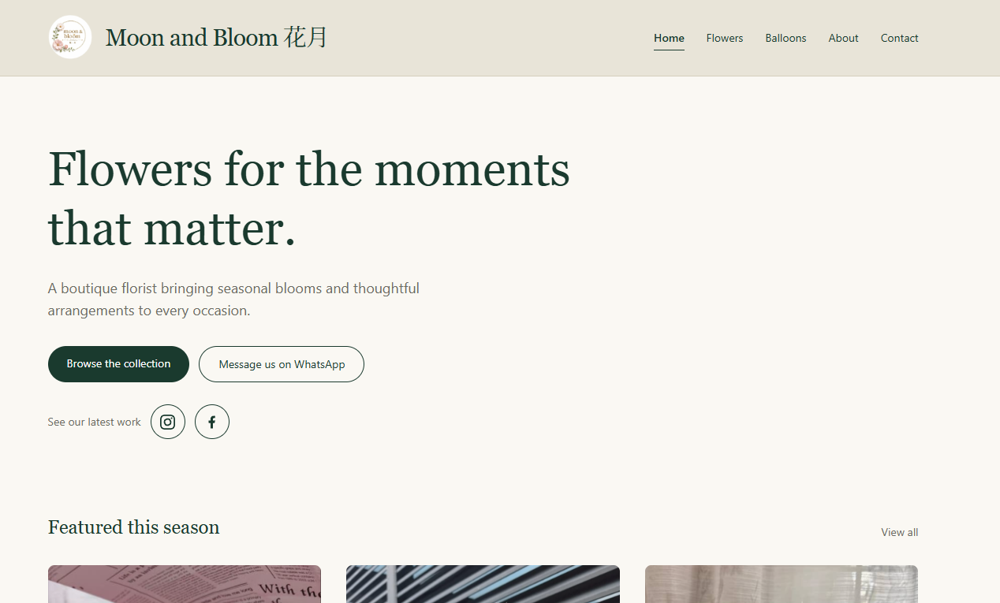

A production website for a boutique florist — a public storefront backed by a full admin backoffice the shop owner runs themselves, deployed on Cloudflare's edge platform and shipped continuously from GitHub.
Visit Live Site View SourceMoon and Bloom is a boutique florist selling seasonal arrangements and balloon displays. The brief was a storefront that looks the part, but the real requirement was operational: the owner had to be able to run the catalogue themselves, without a developer in the loop every time a flower sells out or a price changes.
So the site is two applications sharing one codebase. The public half is a
fast, SEO-focused marketing site — collection pages, individual flower and
balloon pages, an about page and an enquiry form. The private half is an admin
backoffice at /admin where the florist manages flowers, photographs,
categories, shop details and incoming enquiries.
Payments were deliberately left out of scope. Rather than bolt on a checkout
the shop was not ready to operate, the database schema keeps the seams open —
price_cents and stripe_price_id already exist — so a
checkout can be added later without a rewrite. Scoping that decision explicitly
kept the first release small enough to actually ship.
Home, flowers, balloons, about and contact pages, with individual pages per item generated from the database rather than hand-written.
The florist manages flowers, images, categories, shop details and enquiries from a private dashboard — no developer involvement needed.
A guided enquiry flow capturing occasion, colour scheme, quantity, date and budget, so a bespoke request arrives with everything already answered.
Superadmin and admin roles with no public sign-up. Every admin route is guarded server-side, so a new admin page is private by default.
Per-page canonical URLs and Open Graph tags, Florist and Product JSON-LD structured data, and a sitemap generated live from available stock.
Runs on Cloudflare Workers with D1 for data and R2 for images. Pushing to main triggers a build and deploy automatically.

The site is live at moonandbloomfloral.com — the fastest way to see the rest of it.
I built and shipped this project end to end — design implementation, front end, backend, database, authentication, deployment and the operational documentation the shop runs on.